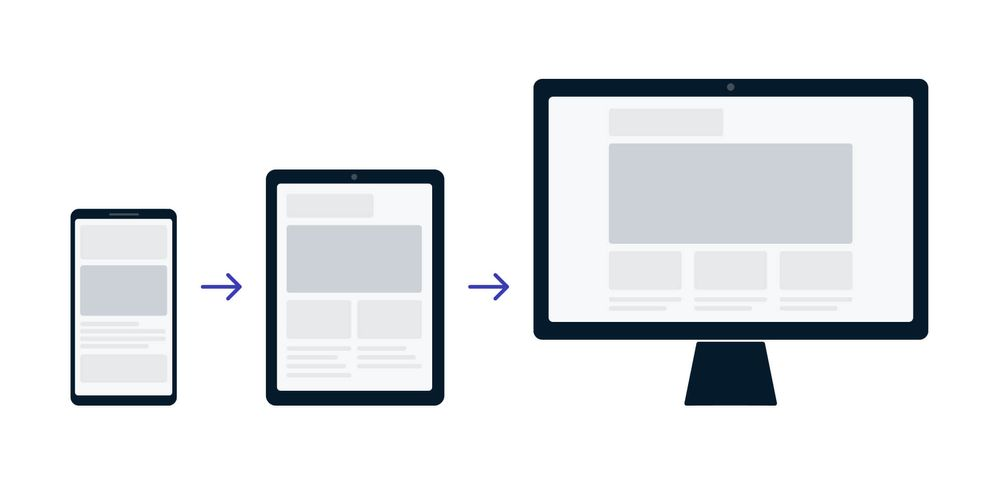

Bevezetés a Reszponzív Webdesignba
Mi az a Reszponzív Webdesign (RWD)?
A reszponzív webdesign (RWD) nem egy különálló technológia, hanem egy tervezési megközelítés és a legjobb gyakorlatok összessége. Az RWD célja, hogy a weboldalak jól jelenjenek meg és jó használhatóságot biztosítsanak minden képernyőméreten és felbontáson.
Az RWD lényege, hogy a weboldal HTML és CSS használatával automatikusan átméreteződjön, elrejtőzzön, zsugorodjon vagy megnagyobbodjon, hogy optimális megjelenést és felhasználói élményt nyújtson minden böngészésre alkalmas eszközön (asztali gép, táblagép, telefon, TV, stb.).
A weboldal rugalmasan alkalmazkodik a különböző böngészők képernyőjének méretéhez. Ez a megközelítés magában foglalja a fluid rácsok, fluid képek és a Media Query-k alkalmazását reszponzív tartalom létrehozásához. A modern CSS elrendezési módszerek, mint a Flexbox és a CSS Grid, eleve reszponzívak.
Az RWD jelentősége és előnyei
A reszponzív webdesignra való áttérés jelentősége 2015 áprilisában nőtt meg különösen, amikor a Google megváltoztatta a rangsorolási algoritmusát, előnyben részesítve a mobilbarát weboldalakat, ami a „mobilgeddon” néven vált ismertté.
Az RWD alkalmazása előnyös a felhasználók szempontjából is, mivel egyre nagyobb az igény a mobilbarát weboldalakra.
Az RWD fő előnyei a különálló mobilos/desktopos verziókkal szemben:
- Keresőoptimalizálás (SEO): A Google előrébb sorolja a reszponzív oldalakat a keresési eredményekben.
- Felhasználói metrikák: Csökken a visszapattanási arány (bounce rate).
- Teljesítmény: Gyorsabb lesz az oldal, mivel nincs szükség átirányításokra a különböző verziók között.
- Fejlesztési hatékonyság: Könnyebb fejleszteni és karbantartani, mivel csak egy helyen kell módosítani a kódot.
- Jövőállóság: A megoldás felkészül a jövőben megjelenő, ma még nem létező eszközökre is (pl. okosóra, hajlítható mobiltelefon, phablet, VR szemüveg).
- Felhasználói élmény: A navigáció és az olvasás nem válik nehézkessé, az oldalsó oszlopok fokozatosan kerülnek egymás alá a képernyőméret függvényében.
A "Mobile First" megközelítés
A "Mobile First" egy tervezési stratégia és egyben az egyik leggyakoribb megközelítés a reszponzív webdesignban.

A megközelítés lényege és okai:
- Tervezési sorrend: Először a mobil nézetet készítjük el, majd ezután a desktoposat és a többit.
- Korlátozások kezelése: A Mobile First megoldás mellett szól az az ok, hogy a mobil verzió esetében kell szembesülni a kis képernyőméret miatti legnagyobb korlátozásokkal. Az ebből való kiindulás előnyösebb, mintha egy komplex asztali dizájnt próbálnánk zsugorítani.
- Kiindulási alap: A legkisebb (pl. 320 pixel) töréspontból érdemes kiindulni, és onnan haladni "felfelé" (pl. 2000 pixel).
- Egyszerűség: A legkisebb eszközök nézete gyakran egyszerű, egyoszlopos tartalom, ami a normál áramlásban (normal flow) jelenik meg, így kevés layout beállítást igényel. Ez azt jelenti, hogy kezdetben viszonylag kevés layout CSS-re van szükség, mivel a HTML forráskód sorrendje biztosítja a tartalmi érthetőséget.
A Media Query-kkel ezután tudunk elrendezési szabályokat adni hozzá, ahogy a nézőkép szélesedik (például két- vagy háromoszlopos elrendezéseket hozva létre).
A reszponzív webdesign egyik alapkövetelménye, hogy a böngésző pontosan tudja, milyen méretű területen dolgozunk, és hogy az elemek méretezése ne fix, hanem relatív (folyékony) legyen. Ezt a fejezet három fő technikai alapkövét tárgyalja.
A Viewport beállítása
A viewport a weboldal felhasználó által látható területe. Ennek mérete különböző kijelzőméreteknél változik.
A reszponzív weboldalak alapvető feltétele, hogy a HTML dokumentum <head> részében mindig szerepeljen a Viewport meta tag. A Viewport egy HTML5-ben bevezetett meta elem, amelyet az alábbi formában kell beállítani:
<meta name="viewport" content="width=device-width, initial-scale=1.0" />
Ez a beállítás két fontos dolgot közöl a mobil böngészővel:
width=device-width: A weboldalwidthtulajdonsága kövesse a kijelző szélességét.initial-scale=1.0: Meghatározza, hogy az oldal mekkora nagyítást (zoomot) használjon az első betöltéskor. Ez segít a betűk konzisztens méretének biztosításában,.
Note
A Viewport meta tag azért elengedhetetlen, mert a mobil böngészők történelmileg hajlamosak voltak „hazudni” a viewport szélességéről (pl. 980 pixelt állítottak be), majd a teljes oldalt lekicsinyítették. Ez a meta tag felülírja ezt az alapértelmezett viselkedést, biztosítva, hogy a mobil böngésző az oldalt mobilképesnek érzékelje, és ne a teljes verziót próbálja meg összenyomni,. Enélkül a reszponzív kialakítás (a töréspontok és média lekérdezések) nem működhetnek megfelelően a mobil böngészőkben.